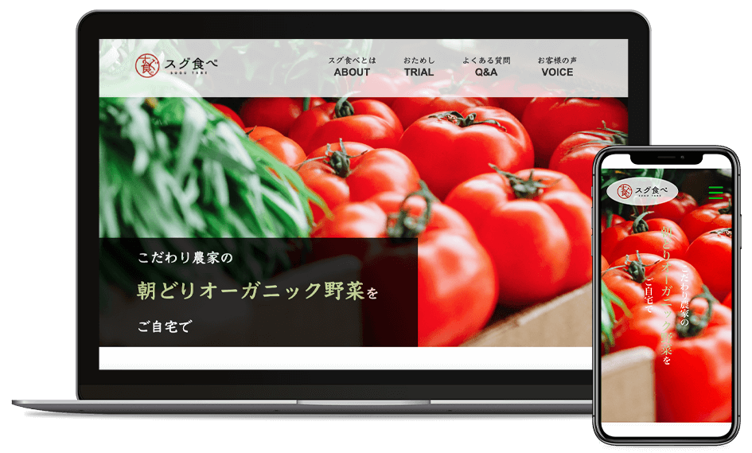

WEBデザイナー養成スクール「デジタルハリウッドSTUDIO」での中間課題制作（LP）です。

デザイン：2週間
コーディング：3週間
成長期の子供がいるママ。
そこそこ食にお金がかけられて（普通のスーパーの1.5~2倍程度）、丁寧な暮らしが好き。
野菜のフレッシュさと、有機野菜のやさしさが伝わるような色使いにしました。
また、お試し購入へ導きたいとのことだったので、大きめのボタンで目を引くようにしました。